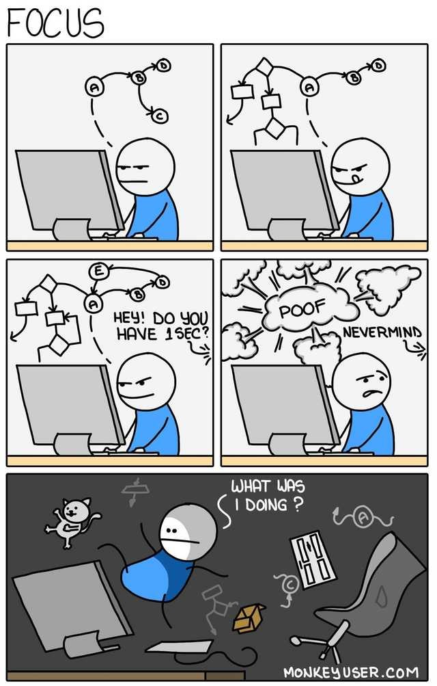

Six Tips for Better Managing Tech Teams

You don't need to be technical to be a great product manager but it helps. During my six-month coding boot camp experience, I simultaneously played the role of the product manager and developer while focusing on the lessons and experiences that would help me better manage technical teams. Below are six lessons learned that I collected from my coding experience.
Let them Focus: A misconception exists that coding is easy; it is not. Software engineering, like mathematical equations, involves abstraction, variables, and complex logic that requires disciplined focus. Work environments festered with disruptions (i.e. constant meetings, ad hoc requests) create a disorientating effect as developers have to repeatedly refocus on the nitty gritty details of their technical solutions. As enablers-in-chief, product managers are responsible for promoting work environments conducive to engineering: establish dedicated engineering core hours, respect the sanctity of the Sprint, and become the point of contact for all engineering requests.-
Unrealistic Timelines = Bad Code: Ask an artist to paint you a piece in five minutes and it will most likely look like one of those cheap cartoon sketches from an amusement park. The same applies to software development. Setting unrealistic deadlines on developers forces them to adopt bad habits in order to deliver on time. Vulnerabilities and tech debt will accumulate as developers rush system design, copy paste unvetted online code, skip testing phases, capture little to no documentation, and many other bad practices. Product managers must trust their tech teams to inform the feasibility of product roadmaps or risk having to communicate abysmal user experience, system downtimes, or a security compromise.
Breaks are Good: One of my first lessons learned during my coding boot camp experience was the importance of walking away from the keyboard whenever frustration started to build. Coding is not like answering emails or creating presentations that you can pound away at under pressure. Panicked coding only results in loud cussing and additional mistakes. A part of being a good developer is knowing when to step away to clear one's mind and return to the problem with a new approach. Product managers should ensure that developers feel comfortable taking breaks without people doubting their work ethic.
Promote Openness: Coding is a collaborative process that requires an environment that encourages people to have open, frank conversations as they challenge and help each other. Product managers are able to promote this openness in several key ways. One way is by championing an independent tech team. Developers must have the ability to honestly discuss technical issues hampering progress and brainstorm solutions without the meddling of external stakeholders. A perfect way to render daily stand-ups useless is by inviting a director as everything will be "great and on-track" once they join. It is the role of the product manager to manage communications with stakeholders; not the tech teams.
Stop Inviting them to Every Meeting: Developers would have chosen a non-technical profession if they enjoyed a day packed with meetings. Technical people feel most empowered when crafting new solutions and business meetings deprive them of that. Product managers (and other leaders) need to respect developers' time by asking themselves whether developers must absolutely join in on a meeting prior to inviting them. It is the responsibility of the product manager to feel comfortable with the product infrastructure to answer technical questions that may arise during meetings. Furthermore, product managers should trust that a well-implemented Agile framework will provide tech teams with the required support structure and work on optimizing Agile ceremonies.
Garbage In => Garbage Out: My German high school teacher would say, "garbage in, garbage out" when passing back exams and the same applies to software development. Product managers cannot expect A+ products from developers if they provide subpar epics and user stories. Coding requires precision not guesswork. Product managers need to closely collaborate with business and technical stakeholders to produce detailed user stories with clear acceptance criteria while working with the tech team to address any misunderstandings.
Closing Thoughts: Product managers find themselves in a unique position that allows them to empower tech teams and improve the Developer Experience (DX). I challenge all product managers to explore and share methods for enabling their tech teams' success!